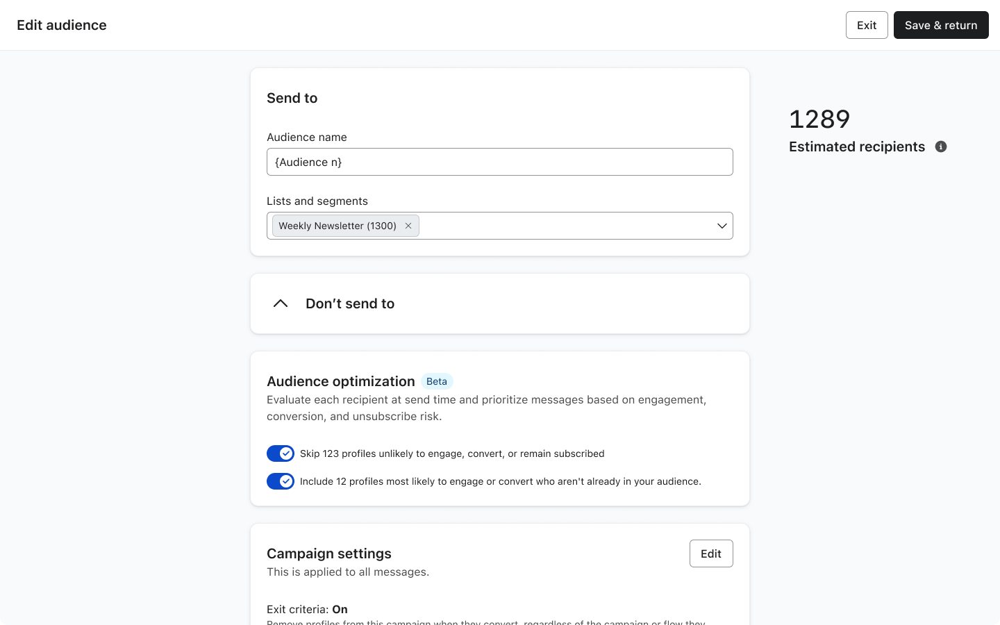
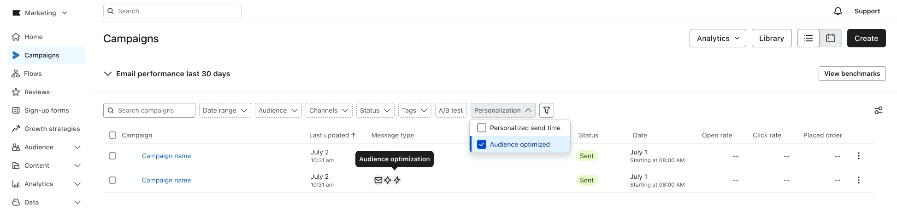
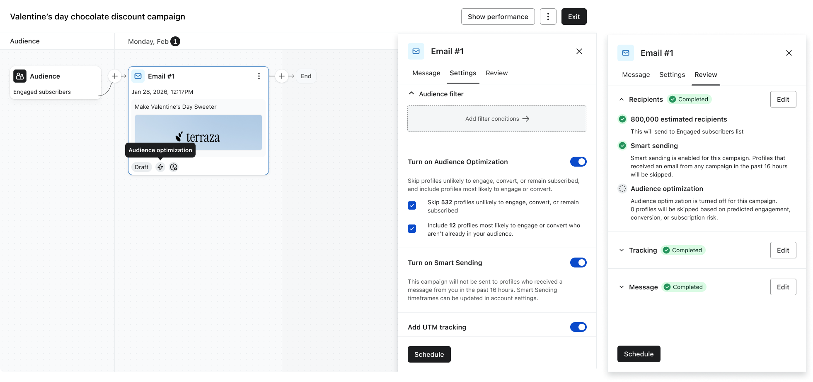

Audience Optimization
Communicate to the right audience

Audience Optimization (AO) is an intelligent decision engine that dynamically adjusts who receives which messages before sending. It uses cross-account ML models to remove (and eventually add) recipients from campaigns based on predicted outcomes.
Background
Marketers lack an intelligent way to manage overlapping messages, relying on send time as a crude priority signal. This approach is manual, doesn’t scale, ignores message value and engagement risk, and leads to higher unsubscribes—directly reducing revenue in a profile-based model.
The direct user problem: "When multiple campaigns or flows could reach the same recipient, I have no way to ensure the most valuable message gets through."
Solution
Audience Optimization is projected to drive $640M+ in impact, making it one of the two anchor features of the Marketing Analytics SKU alongside Personalized Send Time.
In the near term, its value shows up clearly—removing recipients likely to unsubscribe, protecting list health, and improving engagement across the remaining audience. Over time, its impact expands: identifying high-intent recipients to add back in, unlocking incremental revenue and completing the full optimization loop.
Design Thinking
Users relied on ML to optimize their campaigns—but had no way to understand if it was actually improving results. The model doesn’t understand campaign intent, making optimization risky for campaigns that require strict audience control (e.g. VIP or exclusive sends).
This led me to structure the experience as a story:
- What changed → Who was removed → How it changed
1. What changed — Making optimization tangible through visual context
Audience Optimization is configured at the audience level but applied per message—and related controls also appear on the message and in setup, so it’s easy to lose track of what’s actually live.
I partnered with Design Systems to introduce a personalization badge that makes Audience Optimization visible end-to-end—showing which messages and campaigns it’s applied to, and carrying through to analytics so customers can clearly see its impact.


2. Who was removed (Preserving user control over automation)
The model does not yet understand campaign intent, so not all campaigns should be optimized the same way. Some require strict control, while others benefit from optimization.
To balance control and trust, I explored three approaches:
Option 1: “Lightweight summary, but limited control”

Option 2: “High transparency, but cognitively heavy”

Option 3: “Balanced control and clarity (final design)”

| Option | Concept | Pros | Tradeoffs |
|---|---|---|---|
| 1. Summary box | Minimal “campaign personalization” view | Simple, low cognitive load | Lacks control & transparency |
| 2. Expanded metrics | Detailed AO panel with performance data | Transparent, power-user friendly | Confusing, overwhelming at decision time |
| 3. Sub-toggles (Chosen) | One panel with on/off per feature | Clear control, flexible, scalable | Slightly more UI complexity |
The third option was chosen to keep customers intentional about enabling optimization today, while leaving room to transition to a default experience once the model is mature and trusted to run automatically.
3. How it changed — Building trust through explainability
Customers need to quickly understand if the feature is working. I partnered with Data Science to tie Audience Optimization to measurable impact—connecting model decisions to clear outcomes like profiles removed, unsubscribe rate improvement, and aggregate campaign performance—surfaced directly in the campaign view, with meaningful results (e.g., >1% lift) highlighted proactively.

Impact
Feature impact
My key design contribution:
- Defined focused KPI set (unsubscribe rate, profiles removed) to reduce noise
- Designed Removed Recipients view, making model decisions transparent
- Drove metric framing (“rate change” vs. “lift”) to improve interpretability
- Introduced AI badges, surfacing optimization directly in campaign workflows